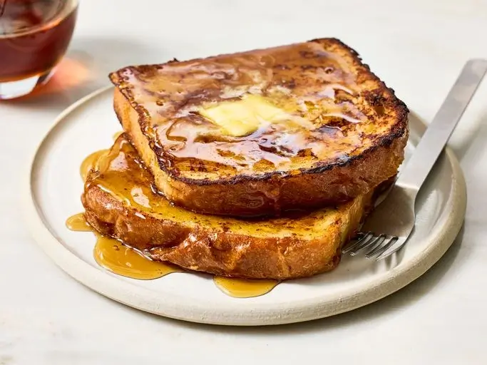

French Toast

Description
This French Toast recipe works with many types of bread! Delicious served hot with butter and maple syrup.
Ingredients
- 2/3 cup milk
- 2 large eggs
- 1 teaspoon vanilla extract (Optional)
- Salt to taste
- 6 thick slices bread
- 1 tablespoon unsalted butter, or more as needed
Steps
- Gather all ingredients.
- Whisk milk, eggs, vanilla, cinnamon, and salt together in a shallow bowl.
- Lightly butter a griddle or skillet and heat over medium-high heat. Dunk bread in the egg mixture, soaking both sides.
- Transfer to the hot skillet and cook until golden, 3 to 4 minutes per side.
- Serve hot.
More Info
Check out the original recipe: All Recipes
Back to Home